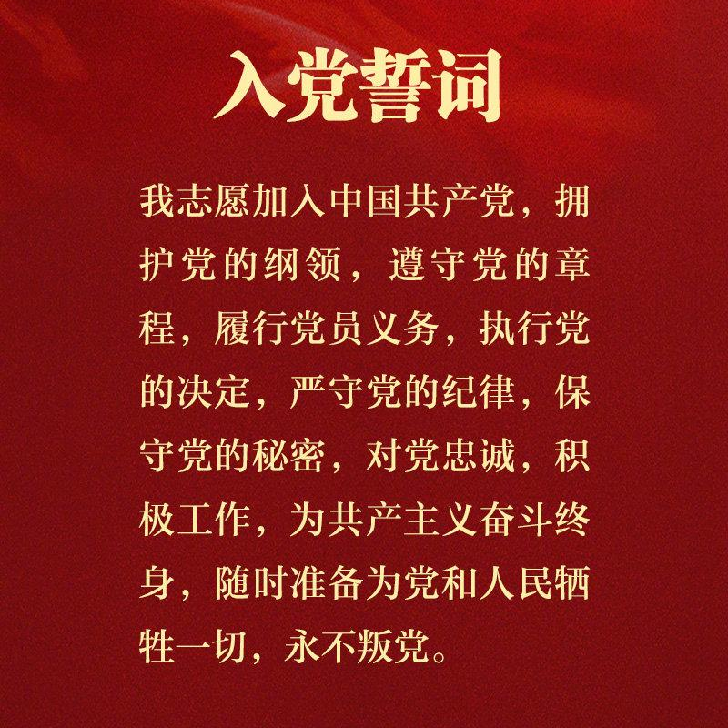

入党流程
一、申请入党
申请人应为共青团员
1.向党组织自愿提交入党申请书
注意:
（1）入党申请人应年满18周岁
（2）入党申请书需由本人亲自书写和提交
（3）申请书中应表达自己的真实意愿、入党动机、态度、认识是否明确等
2.党组织派人与入党申请人谈话
党组织收到入党申请书后，在一个月内派人同入党申请人谈话，了解基本情况，并做好谈话记录。
提醒：积极把握机会报名参加学院组织的青马班(青年马克思主义者培养工程班)进行团校教育培养以获取入党积极分子的遴选机会。
二、确定为入党积极分子
参加青马班学习并顺利结业的共青团员优先考虑
3.党组织研究决定入党积极分子
党员推荐或群团组织推优产生人选→支部委员会（支部大会）讨论研究→报上级党委备案→通知入党积极分子→发放入党积极分子培养考察表（填写个人信息）→撰写个人自传。
注意：
（1）入党积极分子不能由党组织个别负责人指定
（2）推荐共青团员为入党积极分子，应有推优材料，由党员推荐的，应保存相关原始推荐资料
（3）党组织讨论研究的情况要作详细文字记录
（4）报上级党委备案的材料由党组织以文件或决议型文体，加盖公章或支部书记私盖正式上报，便于存档保存
4.党组织指定入党培养联系人
党组织确定1－2名正式党员作为入党积极分子的培养联系人，对他们进行培养教育。
5.党支部对入党积极分子的培养、教育和考察
党支部每半年对入党积极分子进行一次考察，并填写《入党积极分子培养考察登记表》，记录其主要表现、接受教育培训和参加党内活动情况，做出考察结论。积极分子每季度提交一篇思想汇报。
三、确定为发展对象
在入党积极分子班学习并顺利结业的入党积极分子
6.确定发展对象的时间和程序
一般应经过党组织一年以上的培养、教育和考察，基本完成规定的教育内容，基本具备党员条件的入党积极分子就可以召开支委会确定为发展对象。
支部委员会讨论程序为：
（1）听取培养联系人对入党积极分子培养、教育情况，并提出能否确定的意见
（2）听取支部考察情况，听取党内外有关群众意见
（3）所在单位党小组讨论研究的意见
（4）支部委员会综合各方面反映和意见集体讨论，作出决定
7.报上级党委备案
8.党组织指定入党介绍人
由2名正式党员作为介绍人，一般由培养联系人担任。
9.对发展对象进行政治审查
需要进行政治审查的范围主要有3个类型：
（1）由所在单位党组织对发展对象本人进行政治审查（主要是对党的理论和路线、方针、政策的态度，政治历史和在重大政治斗争中的表现，遵纪守法和遵守社会公德情况）；
（2）本人直系亲属，主要政审其父母、配偶的政治情况。如与本人不在同一单位，必须要进行函调或外调；
（3）与本人关系密切的社会关系，包括岳父母（公婆）、舅舅、姨姨、姑姑、伯伯、叔叔等亲戚。一般情况下，主要政审其岳父母（公婆）、舅父母的政治情况，同本人没有或很少联系、影响不大的直系亲属，可不列入政审范围。
注意：
政治审查函调或外调材料必须由被政审对象所在单位党支部出具，加盖党组织公章（没有公章的，盖支部书记私盖），上级党委加注审查意见并盖公章。由党组织形成结论性政治审查材料，并附本人直系亲属和社会关系的函调或外调材料。
10.进行短期集中培训并在适当范围内公示
注意：
一是培训的对象是发展对象，而不是入党积极分子；培训时间不少于3天（或不少于24个学时）。
二是公示时间应放在支部委员会讨论确定为发展对象之后，支部大会讨论表决预备党员之前。公示时间一般为7天。
四、确定为预备党员
在发展对象班学习并顺利结业的发展对象

11.支部委员会对发展对象进行审查。
审查主要分为以下五项内容：
（1）党组织对发展对象的培养、教育、考察、政审、培训、公示等情况进行严格审查;
（2）经支部委员会集体讨论认为合格后，将所有材料报具有审批权限的基层党（工）委预审;
（3）基层党（工）委根据需要听取执纪执法等相关部门的意见;
（4）审查结果以书面形式通知党支部，并向审查合格的发展对象发放《入党志愿书》。预审不合格的，不予发放《入党志愿书》。
12.发展对象填写《入党志愿书》。
《入党志愿书》实行编号管理，党组织应对发展对象填写入党志愿书进行指导把关。
注意：
《入党志愿书》既不能填写错误，也不能随意涂改，更不能作废或丢弃。
13.召开支部党员大会讨论表决。
接收预备党员的主要程序有6项：
（1）发展对象汇报自己对党的认识、入党动机、本人履历、现实表现、家庭和主要社会关系情况，以及需要向组织说明的有关问题；
（2）入党介绍人介绍发展对象的主要情况，并对其能否接收为预备党员表明意见；
（3）支部委员会向大会报告对发展对象审查情况及其征求党内外群众意见的情况；
（4）与会有表决权的党员发表意见，对发展对象能否入党进行讨论（有表决权的到会人数超过应到会有表决权人数的半数，并且赞成人数超过应到会有表决权人数的半数，才能通过决议）；
（5）采取无记名投票方式进行表决；
（6）发展对象填写预备党员承诺书。
14.形成决议后上报上级党委
党支部要将支部大会决议填写在发展对象的入党志愿书上，连同申请书、政治审查材料、培养教育考察材料等，一并及时上报上级党（工）委审批。
15.上级党组织指派专人谈话
注意：
谈话时间应安排在支部大会讨论通过其为预备党员后，上级党（工）委审批之前。
16.上级党委进行审批
（1）审批预备党员必须经过集体讨论、表决决定；
（2）必须审议发展对象是否具备条件、入党手续是否完备；
（3）必须在3个月内进行审批（遇特殊情况可延长，但不能超过6个月）；
（4）党委审批后形成批复文件，通知报批党支部，批复文件报上级党委组织部备案；
（5）党委及时将审批意见填写在《入党志愿书》上。
17.预备党员进行入党宣誓
宣誓仪式一般由基层党委或党支部组织进行。
18.预备党员教育和考察
党支部应对预备党员进行教育考察，预备期满时应形成书面考察材料。预备党员至少每半年一次思想汇报。
考察材料主要内容：
（1）预备党员参加组织生活情况；
（2）完成党组织分配任务情况；
（3）思想、学习、工作进步情况；
（4）存在缺点改正情况，目前还存在的不足。
五、预备党员转正
预备期满的预备党员
19.预备党员提出转正申请
一般在预备期满前1个月本人主动向所在党组织提出转为正式党员的书面申请。预备党员不能提前转正，预备期必须为一年。对转入的预备党员，在其预备期满时，如认为有必要，可推迟讨论其转正问题，推迟时间不超过６个月。
提醒：预备期必须为一年
20.党小组提出意见，党支部征求党员和群众的意见
21.支部委员会对预备党员考察等情况进行综合审查
22．党支部讨论表决预备党员转正
注意：
讨论预备党员转正的支部大会，对到会人数、赞成人数等要求与讨论接收预备党员的支部大会相同。
23.上级党委审批预备党员转正
具有审批权限的基层党委对党支部上报的预备党员转正决议，应当在3个月内召开党委会议审批。
24.党委正式通知审批结果
党委以批复文件形式通知党支部，并及时将党委审批意见填写在《入党志愿书》上。
25．建立党员档案
预备党员转正后，党支部应当将《入党志愿书》、入党申请书、政治审查材料、转正申请书和培养教育考察材料等交上级党委存入本人人事档案。无人事档案的，建立党员档案，由所在党委保存。农民和居民党员档案由所在乡镇和街道党（工）委管理，干部职工党员档案由管理其人事部门管理。